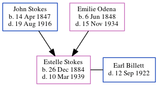

Estelle Pauline Billett (née Stokes) 1884 - 1939
[ Home ] | [ Calendar ] | [ Surnames Index ] | [ Family History ]The child of John Stokes (a virginia philips told me that he owned a big grocery store and later a vinegar works; his last business was stokes marble company) and Emilie Odena, Estelle Stokes, the great-great-aunt of Michele Copp (née Phillips), was born in Georgia on Dec 26, 18841,2,3. She married Earl Billett on Sep 14, 1905 (Fr. Jackson, St Anthony's Church). In 1900, she was living in Militia District, Black Hall (Part, Excl. Atlanta City), Fulton, Georgia1.
She died on Mar 10, 1939 in Fulton2,3 and was buried in Atlanta, Fulton County, Georgia, USA after Mar 10, 19393.
Parents
- John Wesley was born on Apr 14, 1847
- Emilie Mae was born on Jun 6, 1848
Citations
- 1900 United States Federal Census Online publication - Provo, UT, USA: MyFamily.com, Inc., 2004.Original data - United States of America, Bureau of the Census. Twelfth Census of the United States, 1900. Washington, D.C.: National Archives and Records Administration, 1900. T623, 1854 rolls.
- Georgia Deaths, 1919-98 Online publication - Provo, UT, USA: The Generations Network, Inc., 2001.Original data - State of Georgia. Indexes of Vital Records for Georgia: Deaths, 1919-1998. Gerogia, USA: Georgia Heatlh Department, Office of Vital Records, 1998.Original data: State
- U.S., Find A Grave Index, 1600s-Current Ancestry.com Operations, Inc.
Family Tree
Generated by ged2site. Last updated on Jun 25, 2024